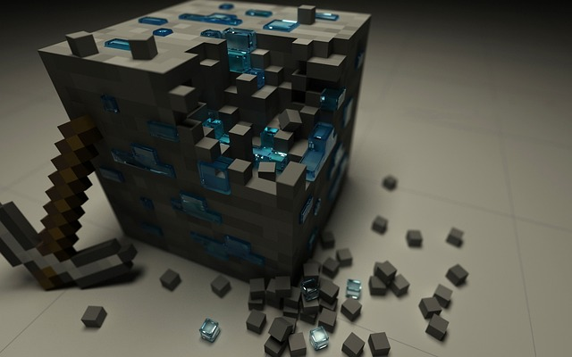

Трава
Зелений блок з коричневими крапками. Росте на поверхні світу.
Сайт про гру Minecraft та програмування
Цей сайт створений для вивчення HTML та CSS у стилі гри Minecraft.
Minecraft - це пісочниця з відкритим світом, де ви можете будувати, досліджувати та творити!
Зелений блок з коричневими крапками. Росте на поверхні світу.
Коричневий блок. Використовується для будівництва та садівництва.
Сірий блок. Основа для багатьох рецептів крафтингу.
Крафтинг - це процес створення нових предметів з існуючих.
Наприклад, щоб зробити верстак, вам потрібно:
Minecraft можна модифікувати за допомогою коду:
HTML та CSS - це основи веб-програмування, які ви можете вивчати, створюючи сайти у стилі Minecraft!